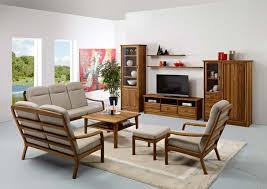

The word furniture comes from the French fourniture, which means equipment. In most other European languages, however, the corresponding word (German Möbel, French meuble, Spanish mueble) is derived from the Latin adjective mobilis, meaning movable. The Continental terms describe the intrinsic character of furniture better.
